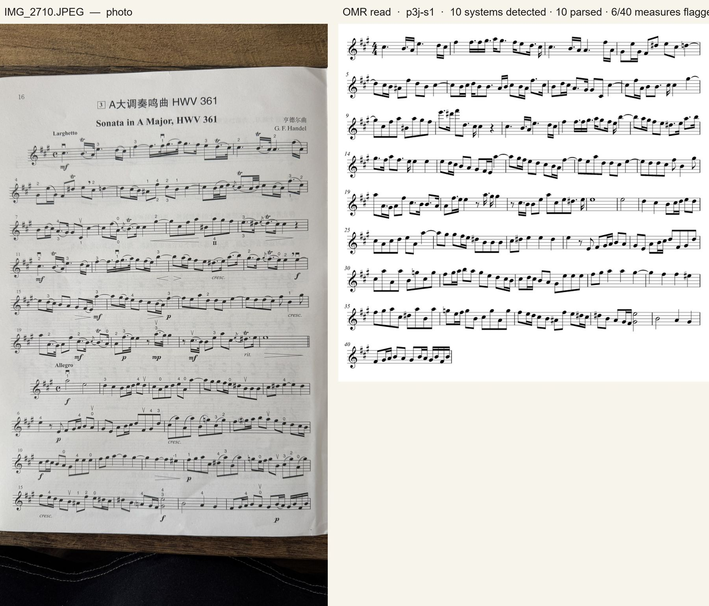
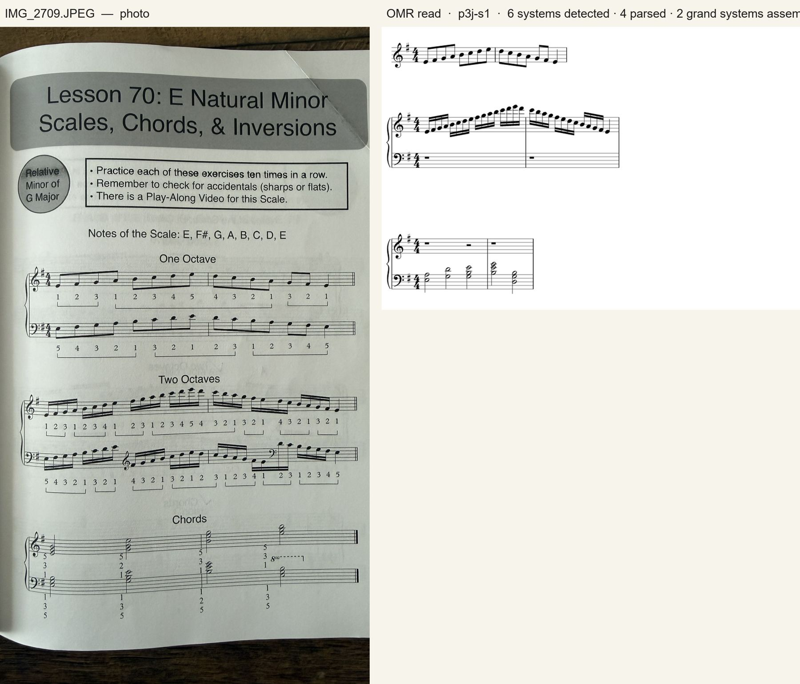
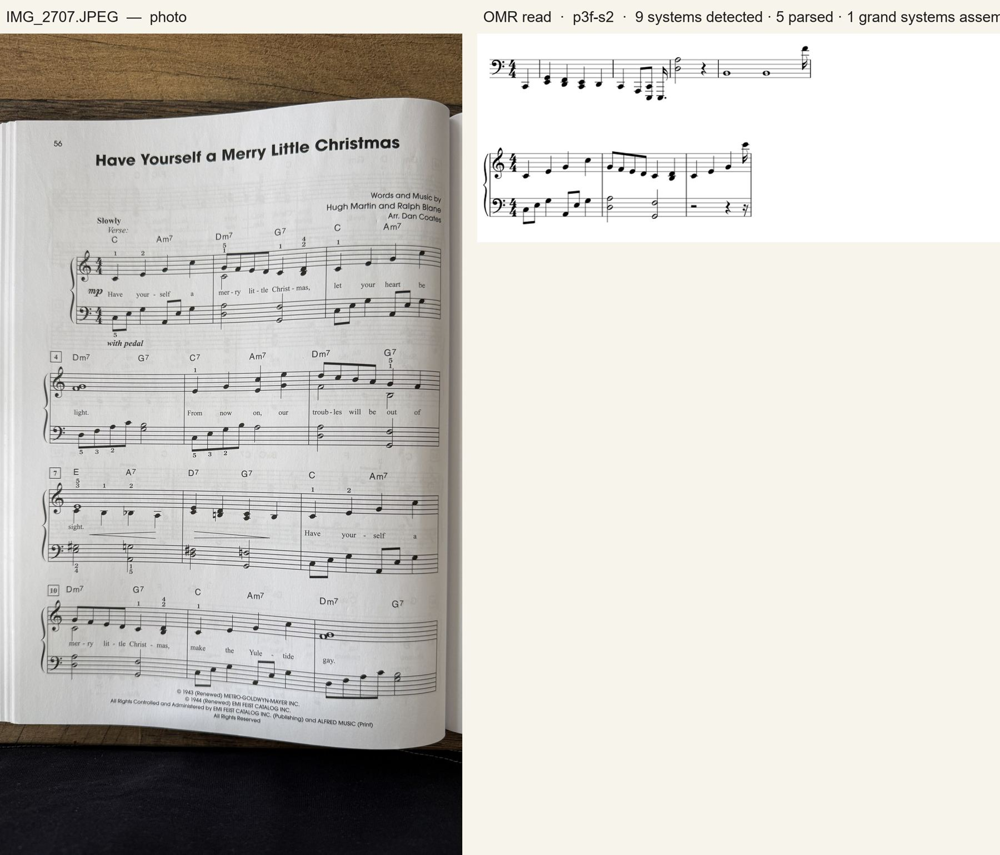
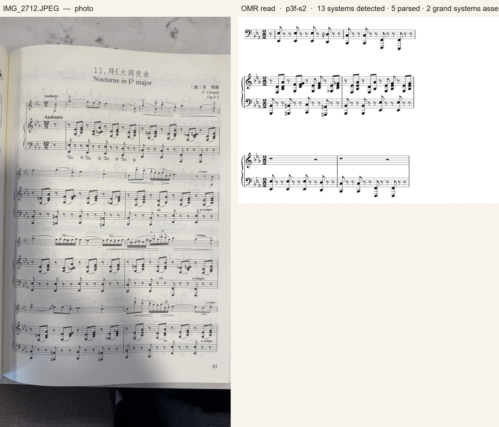
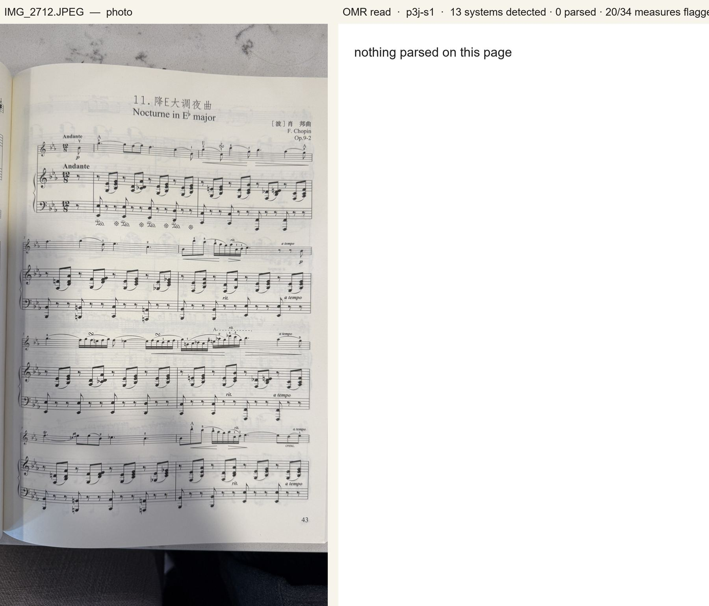

Probe · 2026-08-27 · live1 — the standing test target
Six real pages, two checkpoints
Shot handheld on an iPhone in ordinary room light, books left as they lie (curved spreads,
pen marks, all). Read with p3f-s2 — checkpoint of record (the one that
passed G5) and p3j-s1 — capacity campaign candidate (better on every sealed
probe, but not selectable: it hallucinates 8va brackets on method-book pages). The right-hand render is
exactly what the produced MusicXML says; systems that did not parse are simply absent from it.
| page | staves found | p3f-s2 | p3j-s1 | what limits it |
|---|
| Handel, Sonata in A HWV 361 — violin part | 10 / 10 | 9 of 10 systems parsed | 10 of 10 parsed, 6/40 measures flagged | in scope — single printed staff |
| Lesson 70 — E minor scales & chords (piano method, fingerings) | 6 / 6 → 3 pairs | 4 parsed · 1 grand system assembled | 4 parsed · 2 assembled | a mid-staff clef change in the bass part; the chord block |
| Suzuki-style minuet + string-crossing exercises (pen marks) | 9 / 9 | 3 parsed | 3 parsed | slurs over ties, exercise fragments, pen marks |
| Songbook p. 1 — vocal line + piano, lyrics, chord symbols | 9 of 12 | 5 parsed · 1 assembled | 3 parsed · 1 assembled | two voices on one staff, chord symbols, three-staff systems paired as two |
| Songbook p. 2 | 8 of 12 | 0 | 0 | same |
| Chopin, Nocturne Op. 9 No. 2 | 13 / 13 → 3 pairs | 5 parsed · 2 assembled (left hand only) | 0 | tuplets, grace notes, multiple voices, pedal — out of scope |
Reading it honestly. Single-staff printed parts are solid. Piano pages read
where the writing is one voice per staff (method books, exercises) and fall apart on songbook and romantic
writing — several voices on one staff, chord-symbol text, tuplets, grace notes. Photo conditions are no longer
the limit: every staff was found on every page except the curved songbook spreads, and those misses are the
vocal + piano three-staff systems the pairing does not model yet. The next capability levers are notation
scope, not camera robustness.
Handel — Sonata in A major, HWV 361 (violin)
The strongest case: both movements read as one continuous line, dotted rhythms, ties and accidentals
intact. The 6 flagged measures are where a teacher would look first when correcting.
p3j-s1 · candidate 10 of 10 systems parsed

p3f-s2 · record 9 of 10 systems parsed
Lesson 70 — E natural minor scales, chords & inversions (piano method)
The one-octave scale reads cleanly as a line. In the two-octave system the treble run is exact and the
bass staff comes out as rests: that staff switches to a treble clef mid-line — a mid-staff clef change in
the bass part. The chord block reads the bass chords, not the treble ones. Fingering digits under
every note are the clutter that trips the p3j candidate on other pages.
p3j-s1 · candidate 4 parsed · 2 of 2 grand systems assembled

p3f-s2 · record 4 parsed · 1 assembled
Minuet + string-crossing exercises (violin method, red pen marks)
Three of nine systems parse. The rest fail on slurs drawn over ties, the short exercise fragments and
the teacher's pen marks — real practice-sheet conditions the corpus does not render yet.
p3j-s1 · candidate 3 of 9 parsed
p3f-s2 · record 3 of 9 parsed
Songbook — vocal line + piano, lyrics, chord symbols (two pages)
The wall, seen up close: a whole-note bass voice under a quarter-note melody on the same staff, chord
symbols above, lyrics below, and three-staff systems (voice + piano) that the pairing reads as two. The
recognizer is confident and wrong in a way the parser rejects — multiple voices per staff
is the next representation to add.
p3f-s2 · record · page 1 5 parsed · 1 assembled

p3j-s1 · candidate · page 1 3 parsed · 1 assembled
p3f-s2 · record · page 2 nothing parsed
p3j-s1 · candidate · page 2 nothing parsed
Chopin — Nocturne in E♭ major, Op. 9 No. 2
Out of scope on purpose, kept as the stretch case: tuplets, grace notes, several voices, pedal marks.
All 13 staves are found and paired; the two systems p3f-s2 assembles carry only the left-hand
figuration, the right hand comes out empty.
p3f-s2 · record 5 parsed · 2 assembled

p3j-s1 · candidate nothing parsed
